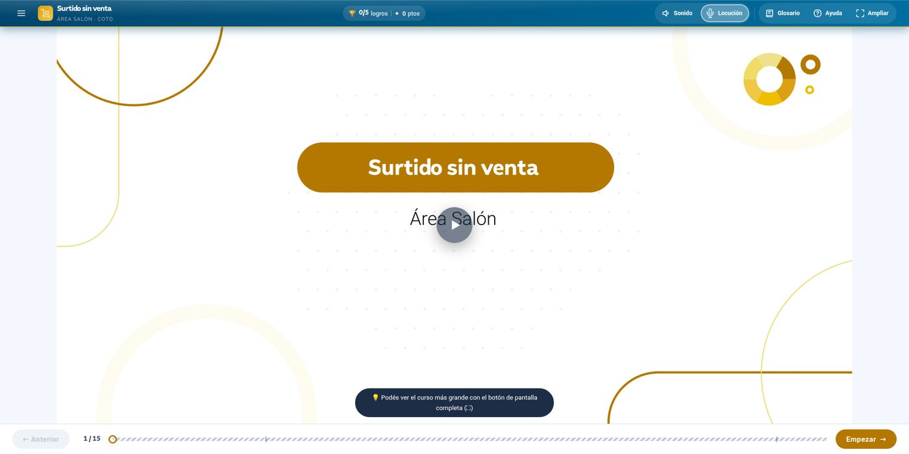
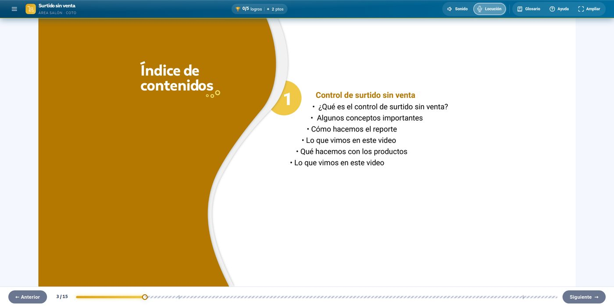
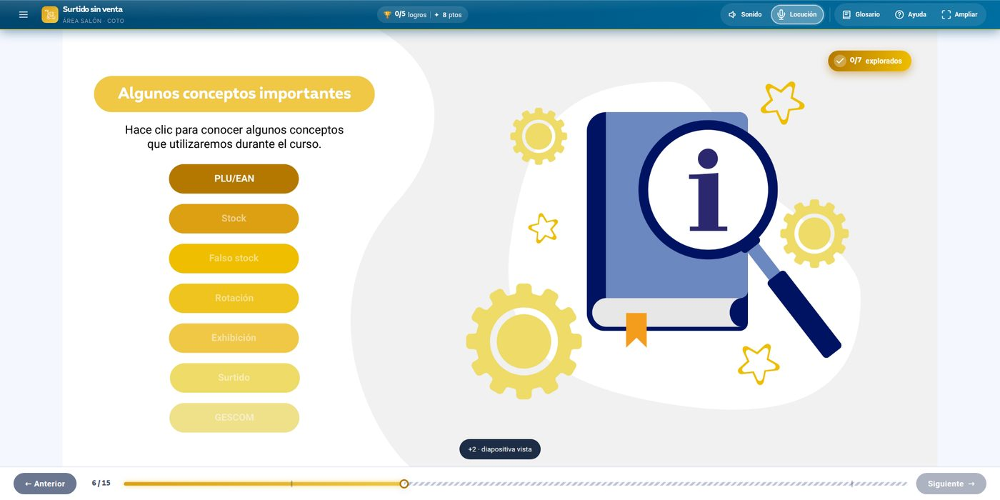
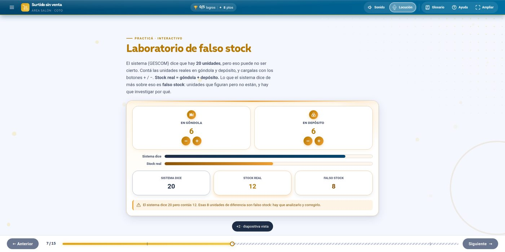
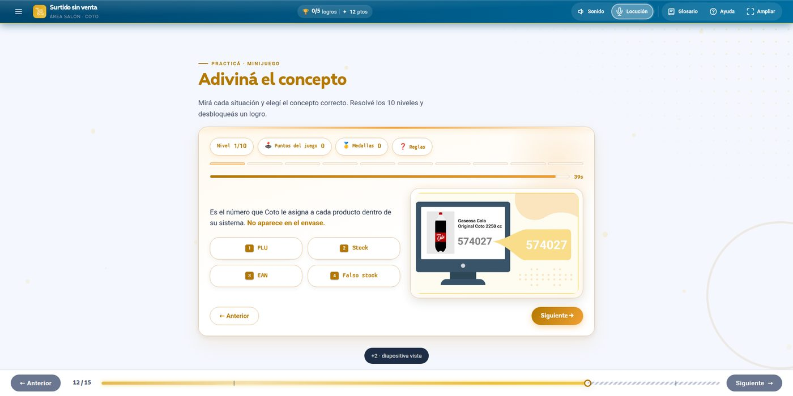
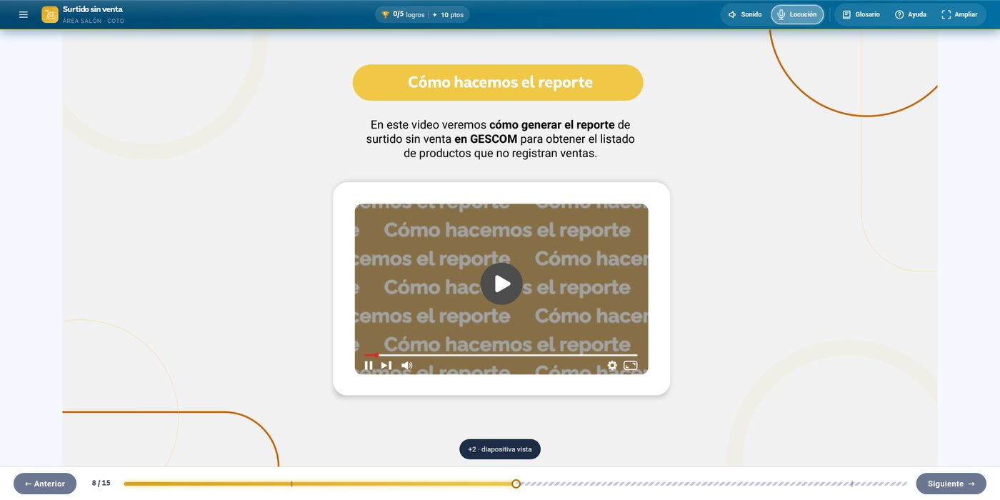
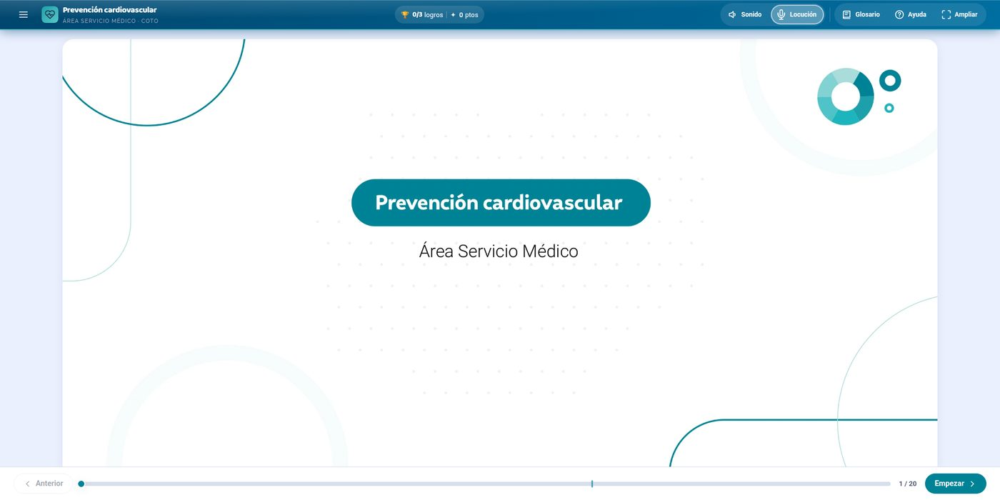
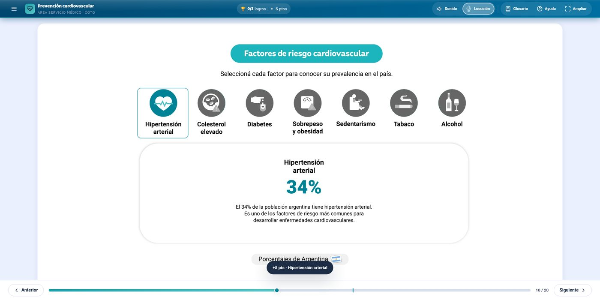
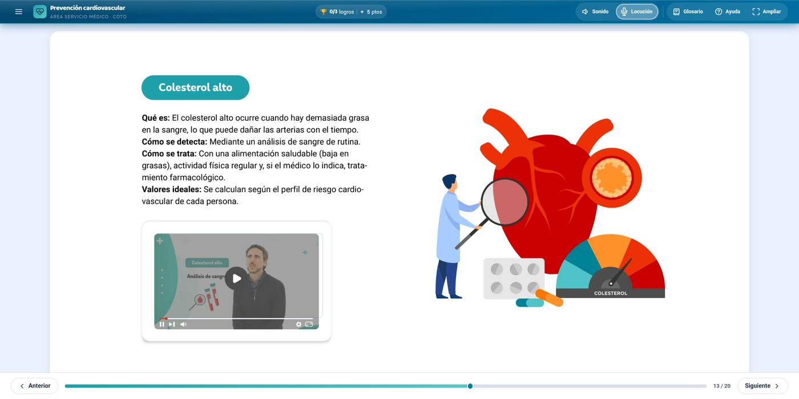
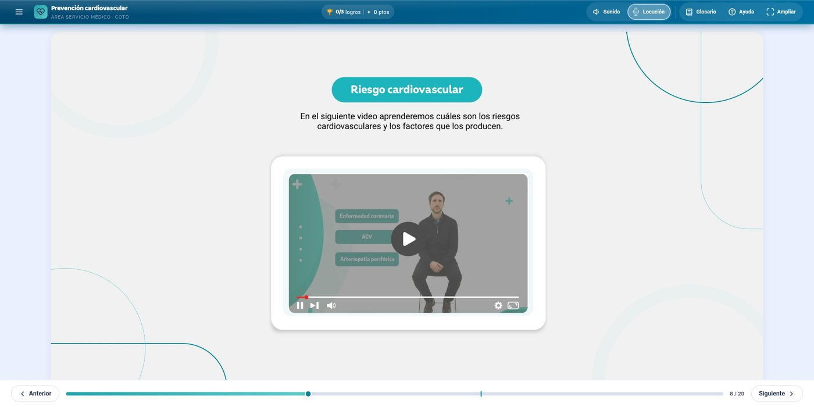

Caso 02 · COTO CICSA · Kit propio · IA aplicada a producción
De un PDF a un SCORM, sin Storyline.
En 2026 dejé de producir cursos con software cerrado y lideré la construcción de algo distinto: un kit propio, hecho en código, entrenado en conversación con IA, que toma el PDF de diseño de un curso y devuelve un SCORM completo — el formato estándar que cualquier plataforma de capacitación (Moodle, Cornerstone, Docebo) sabe leer — con capas, interactividad, gamificación y narración. Ya lo usamos para dos cursos reales, en dos áreas completamente distintas.
Rol
Dirección de producto · Arquitectura de contenido
Herramienta
Kit propio + Claude
Formato de salida
SCORM 1.2 · xAPI opcional
Cursos ya construidos
2 (y en crecimiento)
Cursos construidos
2
Diapositivas producidas
35
Áreas ya cubiertas
2
Licencias de autor cerrado
Cero
01 · Por qué cambiar
Un software cerrado tiene un techo.
Storyline me dio años de cursos funcionando, pero tiene un límite estructural: cada interacción nueva depende de lo que el software permita hacer, cada corrección de diseño es manual, y la fidelidad con la maqueta del diseñador siempre pierde algo en el camino. Además, escalar el equipo significa escalar licencias.
La pregunta que me hice no fue "¿cómo hago este curso más rápido en Storyline?" sino "¿qué pasaría si el curso se generara directamente a partir del PDF de diseño?". La respuesta fue construir la herramienta, no buscarla.
El cambio de fondo
No tercericé la construcción de esta herramienta. La dirigí: definí qué tenía que garantizar el sistema (fidelidad 1:1 con el diseño, accesibilidad, SCORM real, reutilización entre cursos) y trabajé en conversación sostenida con IA para materializarlo en código. Ese es el rol — pensar la arquitectura, no escribir cada línea.
02 · Qué construimos
Un kit base, no un curso suelto.
La diferencia con "armar un curso en código" es que esto es infraestructura reutilizable: un motor de diapositivas/capas/pop-ups, un sistema de diseño con una paleta de color propia por área de la empresa (Salón, Servicio Médico, y las que sigan), un wrapper SCORM 1.2, un adaptador xAPI opcional y un narrador por voz — todo genérico, todo documentado, todo pensado para que el próximo curso lo herede gratis.
Motor
Diapositivas · capas · pop-ups
Tres niveles de estado con un contrato formal: diapositiva a pantalla completa, capas que cambian sin salir de ella (tabs, casos, preguntas), pop-ups accesibles con foco atrapado.
Diseño
Sistema de tokens por área
Una paleta y tipografía por categoría de la empresa (Salón, Servicio Médico, y las que sigan), sin escribir un color nuevo por curso — se hereda del sistema.
SCORM
Progreso real, guardado real
Wrapper SCORM 1.2 con bookmark de reingreso, tiempo de sesión y estado persistido — el curso recuerda dónde te quedaste, como cualquier LMS espera.
Voz
Narración automática
Cada diapositiva se puede escuchar. Narrador por voz con velocidad adaptada a la calidad de la voz disponible en cada navegador.
Fidelidad
1:1 con la maqueta
El PDF de diseño se exporta en capas y se posiciona en porcentajes, no en píxeles fijos — se ve igual en un celular que en un monitor 4K, sin recodificar nada.
Accesibilidad
Pensada desde el motor
Navegación por teclado, anuncios para lectores de pantalla en cada cambio de diapositiva, y respeto de prefers-reduced-motion — no como agregado, como base.
03 · Primera prueba real
"Surtido sin venta" — Área Salón.
El curso que fijó el patrón. Control de stock fantasma para operadores de salón: qué es el "falso stock", cómo se detecta, cómo se reporta y qué hacer con los productos que no rotan. Quince diapositivas, todas con captura fiel del PDF de diseño, con la interactividad y la gamificación construidas encima.

Portada · Área Salón · narración y logros activos desde el primer segundo
El alumno salta a cualquier tema con un clic

7 conceptos para explorar, sin salir de la pantalla

Gamificación real, no decorativa
El "Laboratorio de falso stock" hace contar unidades en góndola y depósito, y compara en vivo contra lo que dice el sistema. No es una animación — es la lógica del contenido real, jugable.
Laboratorio interactivo

Minijuego · 10 niveles


Video embebido con transcripción accesible y tracking propio en SCORM
04 · La prueba que importa
"Prevención cardiovascular" — Área Servicio Médico.
El primer curso demuestra que la idea funciona. El segundo demuestra que el sistema escala: mismo motor, mismo wrapper SCORM, cero líneas de código genérico tocadas — y sin embargo un curso completamente distinto en tema, paleta y tono, porque el sistema de diseño lo resuelve por herencia, no por copia y pegado.
Área SalónÁrea Servicio Médico

Mismo motor, mismo wrapper SCORM — la diferencia de paleta y tono la resuelve el sistema de diseño, no una reconstrucción
El alumno explora 7 factores de riesgo sin cambiar de pantalla

Cada factor abre su propia ficha con el dato clave


Video con transcripción accesible, integrado con el mismo mecanismo de pop-up que usa Surtido sin venta
05 · Cómo funciona
El camino de PDF a SCORM.
No hay magia — hay un proceso claro que se repite curso a curso, cada vez más rápido:
01
PDF de diseño
El diseñador entrega el curso maquetado, diapositiva por diapositiva, en la proporción de trabajo fija del sistema.
02
Exportación por capas
Cada página se exporta a fondo + piezas de contenido con alfa real — texto, tarjetas, personajes — registradas pixel a pixel.
03
Posicionamiento en código
Cada pieza se ubica en porcentajes contra el tamaño real de la imagen, no en píxeles — se recalcula solo en cualquier pantalla.
04
Interactividad declarada
Botones invisibles sobre las zonas clickeables del PDF activan capas, pop-ups y gamificación — sin reconstruir nada a mano.
05
Empaquetado SCORM
El motor se conecta al wrapper SCORM 1.2: progreso, tiempo, bookmark de reingreso. Un solo archivo, compatible con cualquier LMS.
06
Verificación automática
Una suite de tests corre contra el paquete final: hitboxes, accesibilidad de teclado, auditoría profunda — antes de entregarlo, no después de que falle.
Por qué esto importa
Esto no es "un curso hecho distinto". Es una forma nueva de producir contenido de aprendizaje a escala — con menos fricción de licencias, más fidelidad de diseño, y un sistema que cada curso nuevo hereda en vez de reconstruir. Es la parte del trabajo que menos se ve y más cambia el resultado final.